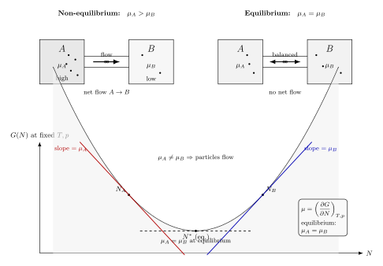

化学势 $\mu$ 究竟刻画什么?
做一个思想实验. 把一个小容器和一间大房间用一根细管连起来, 管中有一道可开可关的门. 关门时, 小容器里放的是真空, 房间里是常温常压的空气. 现在把门打开. 空气会冲进小容器, 直到两边压强相等 —— 这一过程你我都"看得见". 但换一个版本: 把小容器也预先充进同温同压的氮气, 大房间里则是同温同压的氮气加少量水蒸气. 把门一打开, 空气压强两边相同, 按"压强驱动"的朴素图像, 应该什么都不发生 —— 可水蒸气其实会慢慢渗进小容器, 直到两边的水蒸气密度也相等. 显然, 驱动水蒸气迁移的不是压强. 是什么?
学过一点热力学的人会脱口而出: 化学势. 可化学势到底是什么? 课本上会给出至少四个定义, 相互还长得不一样. $\mu$ 有时写成 $(\partial U/\partial N)_{S,V}$, 有时写成 $(\partial G/\partial N)_{T,p}$, 有时又写成 $-T(\partial S/\partial N)_{U,V}$; 到了相平衡里它成了"两相相等"的那个量, 到了化学反应里它满足 $\sum\nu_i\mu_i=0$, 到了半导体里它又摇身一变成了 Fermi 能级. 这些定义凭什么都叫"同一个" $\mu$? 这一节就要把这件事讲清楚: 化学势只有一个根, 所有不同的面孔都是同一棵树上长出来的枝叶.
一、从 $dU = TdS - pdV + \mu dN$ 这一条根式说起
一切的源头是内能 $U$ 对自然变量 $S,V,N$ 的全微分:
$$ dU = T\,dS - p\,dV + \mu\, dN. \tag{1} $$
这里 $T,p,\mu$ 分别被定义为 $U$ 对 $S,V,N$ 的偏导, 即 $T = (\partial U/\partial S)_{V,N}$, $p = -(\partial U/\partial V)_{S,N}$, 以及
$$ \mu \equiv \left(\frac{\partial U}{\partial N}\right)_{S,V}. \tag{2} $$
(2) 式是化学势最"原始"的定义. 它告诉我们: 固定熵和体积的条件下, 给系统加进一个粒子, 内能上升 $\mu$. 这就是"加一个粒子要付的能量价". 注意这里"固定 $S,V$"很重要: $V$ 不变大家好理解, $S$ 不变则意味着加粒子时没有向环境放热; 这不是日常实验的条件, 但它提供了最干净的定义基础.
(2) 式的几何意义是: 把 $U$ 画成 $(S,V,N)$ 的曲面, $\mu$ 是沿 $N$ 方向的斜率 (把 $S,V$ 固定). 而 $(S,V,N)$ 正是内能的"自然变量" —— 它们都是广延量 (extensive), 即同时放大一倍时 $U$ 也放大一倍. 这条齐次性会在后面 Euler 关系里给我们一把大礼.
二、四个 $\mu$ 凭什么等价? —— 一个严肃的 deepdive
教科书里关于化学势常见的断言是: 下面这四个式子全部定义同一个 $\mu$,
$$ \mu = \left(\frac{\partial U}{\partial N}\right)_{S,V} = \left(\frac{\partial F}{\partial N}\right)_{T,V} = \left(\frac{\partial G}{\partial N}\right)_{T,p} = -T\left(\frac{\partial S}{\partial N}\right)_{U,V}. \tag{3} $$
这是一个被反复讲却很少被认真推的 cliché. 为什么固定的背景变量变了 ($S\to T$, $V\to p$, $U\to S$), $\mu$ 却不变? 这背后的内容不止"约定记号", 而是 Legendre 变换和偏导代数的一段正经推理. 我们一步一步做.
从 (1) 到 $F$. 自由能 $F(T,V,N) \equiv U - TS$ 是内能沿 $S\leftrightarrow T$ 做 Legendre 变换的产物 (上一节已讲). 对它取全微分:
$$ dF = dU - T\,dS - S\,dT = -S\,dT - p\,dV + \mu\, dN. $$
这里直接把 (1) 代入, $T\,dS$ 消掉, 只留下 $-S\,dT$. 自然变量换成 $(T,V,N)$, 全微分的 $dN$ 系数就是 $\mu$. 所以 $(\partial F/\partial N)_{T,V} = \mu$, 第二个等号证完. 关键一步: $\mu$ 是 $dN$ 在 (1) 式中的系数; 做 Legendre 变换换掉 $S\to T$ 只动了 $dS$ 项, 完全没碰 $dN$ 项, 所以 $dN$ 的系数不变.
从 $F$ 到 $G$. Gibbs 自由能 $G(T,p,N) \equiv F + pV = U - TS + pV$. 取全微分:
$$ dG = dF + p\,dV + V\,dp = -S\,dT + V\,dp + \mu\, dN. $$
同理, Legendre 变换 $V\leftrightarrow p$ 只动了 $dV$ 项, 没碰 $dN$, 所以 $(\partial G/\partial N)_{T,p} = \mu$, 第三个等号证完.
从 (1) 到 $S$ 视角. 把 (1) 式解出 $dS$:
$$ dS = \frac{1}{T}\,dU + \frac{p}{T}\,dV - \frac{\mu}{T}\,dN. $$
读作 $S$ 是 $(U,V,N)$ 的函数. 从这个全微分直接读出 $(\partial S/\partial N)_{U,V} = -\mu/T$, 移项就是 $\mu = -T(\partial S/\partial N)_{U,V}$, 第四个等号证完.
看一眼四个等号在做什么. (2) 式把 $\mu$ 定义为内能曲面沿 $N$ 方向的斜率 (背景 $S,V$); (3) 的第二式是在自由能曲面上沿 $N$ 走 (背景 $T,V$); 第三式是在 Gibbs 面上走 (背景 $T,p$); 第四式是在熵面上反向走 (背景 $U,V$, 差一个 $-T$ 因子). 四条路径穿过同一块势能地形, 测量的是"$N$ 方向上的驱动力", 但因为固定的背景不同, 几何上是同一个向量场在不同基上的投影. Legendre 变换保证了这些投影量彼此自洽 —— 这就是四式等价的深层原因.
一个常见陷阱值得点一下. 有人会问: "那为什么 $(\partial U/\partial N)_{T,V}$ 不等于 $\mu$?" 答案: 因为 $T,V$ 不是 $U$ 的自然变量, 这个偏导没有简洁形式. 实际上可以算出
$$ \left(\frac{\partial U}{\partial N}\right)_{T,V} = \mu - T\left(\frac{\partial S}{\partial N}\right)_{T,V}, $$
它含一个熵修正项, 不是 $\mu$. 这提示我们: 偏导的值依赖于固定哪些变量, "把 $U$ 对 $N$ 求导"这句话本身是不完备的. 四个等价式能等, 全赖每个 potential 用的都是它"自然"的背景.
三、$G = N\mu$ 与 Gibbs-Duhem: 齐次性的红利
现在来收一笔红利. 熵、体积、粒子数都是广延量, 所以 $U(S,V,N)$ 作为它们的函数是一阶齐次:
$$ U(\lambda S, \lambda V, \lambda N) = \lambda\, U(S,V,N). $$
对 $\lambda$ 求导并令 $\lambda=1$, 用 Euler 定理:
$$ U = S\,\left(\frac{\partial U}{\partial S}\right) + V\,\left(\frac{\partial U}{\partial V}\right) + N\,\left(\frac{\partial U}{\partial N}\right) = TS - pV + \mu N. $$
这就是 Euler 关系. 配合 $G = U - TS + pV$, 立刻
$$ G = \mu N, \qquad \mu = G/N. \tag{4} $$
(4) 式告诉我们一个漂亮的事实: 单组分系统的化学势就是"每粒子的 Gibbs 自由能". 这也是为什么 $(\partial G/\partial N)_{T,p}$ 既等于 $\mu$ 又等于 $G/N$ —— 因为 $G$ 在 $N$ 方向本来就是线性的 (在固定 $T,p$ 条件下).
继续. 对 (4) 式取微分, $dG = \mu\,dN + N\,d\mu$; 而从 $G$ 的全微分 $dG = -S\,dT + V\,dp + \mu\,dN$, 两者对比:
$$ N\,d\mu = -S\,dT + V\,dp, \quad\text{即}\quad d\mu = -\frac{S}{N}\,dT + \frac{V}{N}\,dp. \tag{5} $$
(5) 式就是 Gibbs-Duhem 关系, 多组分时写成 $\sum_i N_i\,d\mu_i = -S\,dT + V\,dp$. 它告诉我们: 强度量 $T,p,\mu$ 并非独立; 在固定 $T,p$ 时 $\mu$ 也被锁死. 这正是一条深刻的结论 —— 广延量自由地变, 强度量只能按齐次性的约束变.
四、平衡条件 $\mu_A=\mu_B$: 熵最大化的必然结果
现在可以回答开头的问题了. 两个系统 $A,B$ 通过孔接触, 可以交换粒子. 整体是孤立的, 即 $U_A+U_B$, $V_A+V_B$, $N_A+N_B$ 都守恒. 问: 什么时候达到平衡?
平衡 = 总熵 $S_{\text{tot}} = S_A + S_B$ 对允许的内变量取极大. 让 $N_A$ (从而 $N_B = N-N_A$) 变, 固定其他:
$$ \frac{\partial S_{\text{tot}}}{\partial N_A}\bigg|_{U_i,V_i} = \left(\frac{\partial S_A}{\partial N_A}\right)_{U_A,V_A} - \left(\frac{\partial S_B}{\partial N_B}\right)_{U_B,V_B} = 0. $$
用 (3) 的第四式, $(\partial S/\partial N)_{U,V} = -\mu/T$. 若两边温度已经相等 ($T_A=T_B$, 这是热平衡), 上式化为
$$ \mu_A = \mu_B. $$
这才是化学势相等这条平衡判据的来源 —— 它不是定义, 是熵最大化的推论. 物理图像也清晰: 如果 $\mu_A \gt \mu_B$, 把一个粒子从 $A$ 搬到 $B$, 总熵会涨 (因为从 $A$ 取走一个粒子 $S_A$ 加了 $\mu_A/T$, 放到 $B$ 里 $S_B$ 减了 $\mu_B/T$, 净变化为 $(\mu_A - \mu_B)/T \gt 0$). 所以粒子自发地从高 $\mu$ 流向低 $\mu$, 直到两边拉平. 这是"粒子愿不愿意进来"的量化陈述.
用 $G$ 的语言看同一件事也很干净. 在 $T,p$ 共同固定的背景下, 两系统可换粒子, 总 $G = \mu_A N_A + \mu_B N_B$ 对 $N_A$ 极小的条件正是 $\mu_A=\mu_B$. 平衡即 $G$ 的切线斜率在两边相同, 几何上就是图 1 要展示的那件事.

五、代入数字: 理想气体与经典极限
口说无凭, 算一个. 对理想气体, 利用配分函数 (下一部分会系统讲) 可得 Helmholtz 自由能
$$ F = -NkT\left[\ln\!\left(\frac{V}{N\lambda_T^3}\right) + 1\right], \qquad \lambda_T \equiv \sqrt{\frac{2\pi\hbar^2}{mkT}}, $$
其中 $\lambda_T$ 是热波长. 对 $N$ 求偏导 (固定 $T,V$):
$$ \mu = \left(\frac{\partial F}{\partial N}\right)_{T,V} = kT\ln(n\lambda_T^3), \qquad n\equiv N/V. \tag{6} $$
换用 $p=nkT$, 还可写成 $\mu(T,p) = kT\ln(p/p_0) + \mu_0(T)$, 其中 $p_0 = kT/\lambda_T^3$ 是一个仅依赖 $T$ 的参考压强, $\mu_0(T)$ 只跟温度有关. 这就是教科书里"化学势对压强取对数"的根据.
具体数字 1: 水蒸气在标准条件下. 取 $T=298\,\text{K}$, 水分子质量 $m = 18\,\text{amu}=3.0\times 10^{-26}\,\text{kg}$, 求热波长:
$$ \lambda_T = \sqrt{\frac{2\pi\hbar^2}{mkT}} \approx \sqrt{\frac{2\pi (1.05\times 10^{-34})^2}{3.0\times 10^{-26}\cdot 1.38\times 10^{-23}\cdot 298}} \approx 2.4\times 10^{-11}\,\text{m}. $$
即约 $0.024\,\text{nm}$. 对标准大气 $p = 1\,\text{atm}$, $n = p/(kT) \approx 2.5\times 10^{25}\,\text{m}^{-3}$, 于是
$$ n\lambda_T^3 \approx 2.5\times 10^{25}\times (2.4\times 10^{-11})^3 \approx 3.4\times 10^{-7}. $$
代入 (6) 式: $\mu/kT = \ln(3.4\times 10^{-7}) \approx -14.9$, 即 $\mu \approx -14.9\,kT \approx -14.9\times 4.1\times 10^{-21}\,\text{J} \approx -6.1\times 10^{-20}\,\text{J}$, 合约 $-0.38\,\text{eV}$ (相对于"分子静止在零能态"参考点). 取了个负数 —— 这是经典气体的标志, 粒子多自由度的熵贡献主导, 使得再加一个粒子对 $F$ 的边际贡献为负.
具体数字 2: 两房间水蒸气的平衡. 开头的例子里, 若 $A$ 房水蒸气分压 $p_A = 1\,\text{kPa}$, $B$ 房 $p_B = 3\,\text{kPa}$, 温度相同, 则初态两处水蒸气化学势之差为
$$ \mu_B - \mu_A = kT\ln(p_B/p_A) = kT\ln 3 \approx 1.1\,kT \approx 2.8\times 10^{-2}\,\text{eV}. $$
(5) 式读作: $B$ 比 $A$ 的每粒子 Gibbs 自由能高了 $1.1\,kT$, 水分子会自发地从 $B$ 扩散到 $A$, 直到两者分压拉平. 注意这时总压强 (主要是氮气) 本来是相等的, 可水蒸气依然要迁移 —— 化学势是按每个组分分别拉平的, 跟总压没关系. 这正是开头那个"压强相等却仍有流动"的现象的定量解释.
经典极限与量子简并的极限检验. (6) 式里的 $n\lambda_T^3$ 是一个极其重要的无量纲数, 叫简并度参数. 当 $n\lambda_T^3 \ll 1$ (粒子间距远大于热波长), $\ln(n\lambda_T^3)\to -\infty$, 化学势 $\mu\to -\infty$ —— 经典极限. 物理上这说明: 气体稀薄到粒子波函数完全不重叠时, 加一个粒子几乎没有"挤压代价", 熵增益主导, 所以"能量价" $\mu$ 很负 (系统乐于接纳新粒子). 反之当 $n\lambda_T^3\sim 1$ (比如低温高密度), 波函数开始重叠, 量子统计规律 (Bose 或 Fermi) 开始生效, (6) 式不再适用 —— 这一区间正是我们第四部分要专门对付的量子简并气体. 玻色子的 $\mu$ 会贴到零再发生凝聚, 费米子的 $\mu$ 则被挤到 Fermi 能级上停不下来. 这是同一个 $\mu$ 在不同统计规律下的两种命运; 而分界标尺正是 $n\lambda_T^3\sim 1$.
六、一段历史与小结前的应用展开
化学势作为一个基本热力学量, 是由 Josiah Willard Gibbs 在 1875-1878 年发表于 Connecticut 科学院学报的长文 On the Equilibrium of Heterogeneous Substances 里首次系统引入的. Gibbs 当时已经写完了关于几何图形表示热力学过程的论文 (1873), 他在那里就意识到仅用 $S,V,U$ 这几个量不够描述多相多组分体系; 要加入一个新量, 它在相与相之间、组分与组分之间必须达到某种平衡. 于是他定义出 $\mu_i = (\partial U/\partial N_i)_{S,V,\{N_{j\neq i}\}}$, 并立刻给出两个应用: 相平衡的 Clausius-Clapeyron 方程, 以及化学平衡的 $\sum\nu_i\mu_i=0$ 条件. 这篇文章当时几乎没人看, 直到 Maxwell 从欧洲写信给他同胞"你们那里出了个大人物", 再加上 Ostwald 把它译成德文 (1892) 在欧洲传开, 物理化学才正式上路. Gibbs 自己则一如既往地安静度日, 终生没离开 New Haven 太远.
到今天, $\mu$ 的面孔远比 Gibbs 当年要多. 化学反应里, 它给出 $\sum \nu_i\mu_i=0$ 的反应平衡条件和质量作用定律. 相平衡里, 两相化学势相等配合 Gibbs-Duhem (5) 式立刻产生 Clausius-Clapeyron 方程 $dp/dT = \Delta S/\Delta V = L/(T\Delta V)$, 把汽液共存线斜率和潜热直接挂钩. 电化学里, 电压 $= -\Delta G/(nF)$ 本质上就是两极化学势差 (再加上电势差) 的体现 —— 一节干电池之所以能给出约 $1.5\,\text{V}$, 源头是氧化-还原两边 $\mu$ 的不匹配. 半导体里, Fermi 能级就是电子化学势, 两块材料接触平衡时 Fermi 能级要拉平, 这直接决定了 pn 结的能带弯曲方向和内建电场. 凡涉及"粒子/电荷流动要不要发生"的问题, 化学势都是那个判据.
小结
化学势 $\mu$ 的多重身份是同一根基的多重投影. 从 $dU=TdS-pdV+\mu dN$ 出发, Legendre 变换把 $\mu$ 原封不动地带进 $F, G$ 的自然变量, $S$ 视角下则多一个 $-1/T$ 的重标度, 于是有了四个等价定义. $G=N\mu$ 与 Gibbs-Duhem (5) 式进一步告诉我们强度量不独立; 平衡判据 $\mu_A=\mu_B$ 则是总熵极大的纯粹推论, 不需要任何额外假设. 代入理想气体的 (6) 式, 标准大气下水蒸气 $\mu\approx -15\,kT$, 正是经典极限 $n\lambda_T^3 \ll 1$ 的体现; 一旦 $n\lambda_T^3\sim 1$, 量子统计就接管一切 —— 这正是第四部分要讲的玻色与费米的命运分叉. 从 Gibbs 1875 年孤独地写下这个量, 到今天它横跨化学、相变、电化学、半导体、量子统计, 都只是在不同舞台上演同一出戏: 谁愿意接纳下一个粒子, 谁不愿意. 化学势给出那张"报价单".
▲